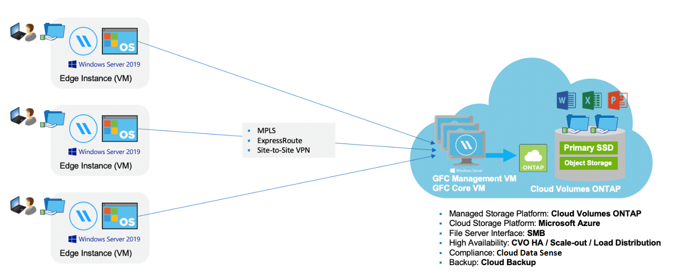

Richiedi modifiche alla documentazione
Richiedi modifiche alla documentazione Modifica questa pagina
Modifica questa pagina Scopri come collaborare
Scopri come collaborareScopri di più sul caching edge BlueXP
Collaboratori
NetApp BlueXP edge caching consente di consolidare silos di file server distribuiti in un unico footprint di storage globale e coerente nel cloud pubblico. In questo modo si crea un file system accessibile a livello globale nel cloud che tutte le ubicazioni remote possono utilizzare come se fossero locali.
BlueXP edge caching è disponibile in due modalità di implementazione per adattarsi all’architettura aziendale: Come nel servizio integrato combinato in un’istanza di Cloud Volumes ONTAP (Cloud Volumes Edge cache) o come componente aggiuntivo alla strategia di storage aziendale (Global file cache)
Panoramica
L’implementazione del caching edge BlueXP comporta un unico impatto dello storage centralizzato rispetto a un’architettura di storage distribuita che richiede gestione dei dati locale, backup, gestione della sicurezza, storage e impatto dell’infrastruttura in ciascuna posizione.

Caratteristiche
BlueXP edge caching offre le seguenti funzionalità:
-
Consolida e centralizza i tuoi dati nel cloud pubblico e sfrutta la scalabilità e le performance delle soluzioni storage di livello Enterprise
-
Crea un singolo set di dati per gli utenti a livello globale e sfrutta il caching intelligente dei file per migliorare l’accesso ai dati globali, la collaborazione e le performance
-
Affidati a una cache autogestita e a gestione automatica ed elimina copie e backup completi dei dati. Utilizza il caching dei file locali per i dati attivi e taglia i costi dello storage
-
Accesso trasparente dalle filiali attraverso uno spazio dei nomi globale con blocco dei file centralizzato in tempo reale
Scopri di più sulle funzionalità di caching edge di BlueXP e sui casi d’utilizzo "qui".
Componenti di caching edge BlueXP
Il caching edge BlueXP è costituito dai seguenti componenti:
-
Server di gestione
-
Core
-
Edge (implementato nelle sedi remote)
L’istanza principale di caching edge BlueXP viene montata sulle condivisioni di file aziendali ospitate sulla piattaforma di storage back-end scelta (ad esempio Cloud Volumes ONTAP, Cloud Volumes Service, E Azure NetApp Files) e crea il "fabric" di caching edge BlueXP che offre la possibilità di centralizzare e consolidare i dati non strutturati in un singolo set di dati, che si trovino su una o più piattaforme di storage nel cloud pubblico.

Piattaforme di storage supportate
Le piattaforme di storage supportate per il caching edge BlueXP variano a seconda dell’opzione di implementazione selezionata.
Opzioni di implementazione automatizzate
Il caching edge BlueXP è supportato con i seguenti tipi di ambienti di lavoro se implementato con BlueXP:
-
Cloud Volumes ONTAP in Azure
-
Cloud Volumes ONTAP in AWS
-
Cloud Volumes ONTAP in Google Cloud
Questa configurazione consente di implementare e gestire l’intera implementazione BlueXP edge caching lato server, incluso BlueXP edge caching Management Server e BlueXP edge caching Core, da BlueXP.
Opzioni di implementazione manuale
Le configurazioni di edge caching BlueXP sono supportate anche con Cloud Volumes ONTAP, Azure NetApp Files, Amazon FSX per sistemi ONTAP e Cloud Volumes Service su Google Cloud. Le soluzioni on-premise sono disponibili anche sulle piattaforme NetApp AFF e FAS. In queste installazioni, i componenti di BlueXP edge caching lato server devono essere configurati e implementati manualmente, non utilizzando BlueXP.
Vedere "Guida utente di NetApp Global file cache" per ulteriori informazioni.
Come funziona il caching edge BlueXP
BlueXP edge caching crea un fabric software che memorizza nella cache i set di dati attivi negli uffici remoti a livello globale. Di conseguenza, agli utenti aziendali viene garantito un accesso trasparente ai dati e performance ottimali su scala globale.

La topologia a cui si fa riferimento in questo esempio è un modello hub e spoke, per cui la rete di uffici/sedi remote sta accedendo a un insieme comune di dati nel cloud. I punti chiave di questo esempio sono:
-
Data store centralizzato:
-
Piattaforma di cloud storage pubblico aziendale, come Cloud Volumes ONTAP
-
-
Fabric di caching edge BlueXP:
-
Estensione dell’archivio dati centrale alle postazioni remote
-
BlueXP edge caching istanza Core, montaggio su condivisioni file aziendali (SMB).
-
Istanze di BlueXP edge caching Edge in esecuzione in ogni posizione remota.
-
Presenta una condivisione di file virtuale in ogni posizione remota che fornisce l’accesso ai dati centrali.
-
Ospita Intelligent file cache su un volume NTFS di dimensioni personalizzate (
D:\).
-
-
Configurazione di rete:
-
Connettività MPLS (MultiProtocol Label Switching), ExpressRoute o VPN
-
-
Integrazione con i servizi di dominio Active Directory del cliente.
-
Spazio dei nomi DFS per l’utilizzo di uno spazio dei nomi globale (consigliato).
Costo
Il costo per l’utilizzo del caching edge BlueXP dipende dal tipo di installazione scelta.
-
Tutte le installazioni richiedono l’implementazione di uno o più volumi nel cloud (ad esempio, Cloud Volumes ONTAP, Cloud Volumes Service o Azure NetApp Files). Ciò comporta addebiti da parte del cloud provider selezionato.
-
Tutte le installazioni richiedono inoltre l’implementazione di due o più macchine virtuali (VM) nel cloud. Ciò comporta addebiti da parte del cloud provider selezionato.
-
Server di gestione del caching edge BlueXP:
In Azure, viene eseguito su una macchina virtuale D2s_V3 o equivalente (2 vCPU/8 GB di RAM) con SSD standard da 127 GB
In AWS, viene eseguito su un’istanza m4.Large o equivalente (2 vCPU/8 GB RAM) con 127 GB di SSD General Purpose
-
Core di caching edge BlueXP:
In Azure, viene eseguito su una macchina virtuale D4S_V3 o equivalente (4 vCPU/16 GB di RAM) con SSD premium da 127 GB
In AWS, viene eseguito su un’istanza m4.xlarge o equivalente (4 vCPU/16 GB di RAM) con 127 GB di SSD General Purpose
-
-
Quando viene installato con Cloud Volumes ONTAP (le configurazioni supportate sono implementate completamente tramite BlueXP), sono disponibili due opzioni di prezzo:
-
Per i sistemi Cloud Volumes ONTAP, è possibile pagare 3,000 dollari per ogni istanza edge caching di BlueXP, all’anno.
-
In alternativa, per i sistemi Cloud Volumes ONTAP in Azure e GCP, è possibile scegliere il pacchetto Cloud Volumes ONTAP cache edge. Questa licenza basata sulla capacità consente di implementare una singola istanza di BlueXP edge caching Edge Edge per ogni 3 TIB di capacità acquistata. "Scopri di più qui".
-
-
Se installato utilizzando le opzioni di implementazione manuale, il prezzo è diverso. Per una stima dei costi di alto livello, vedere "Calcola il tuo potenziale di risparmio" In alternativa, rivolgiti al tuo NetApp Solutions Engineer per discutere delle opzioni migliori per l’implementazione aziendale.
Licensing
BlueXP edge caching include un License Management Server (LMS) basato su software, che consente di consolidare la gestione delle licenze e distribuire le licenze a tutte le istanze Core ed Edge utilizzando un meccanismo automatizzato.
Quando si implementa la prima istanza Core nel data center o nel cloud, è possibile scegliere di designare tale istanza come LMS per la propria organizzazione. Questa istanza di LMS viene configurata una volta, si connette al servizio di abbonamento (su HTTPS) e convalida l’abbonamento utilizzando l’ID cliente fornito dal nostro reparto di assistenza/operazioni al momento dell’abilitazione dell’abbonamento. Una volta effettuata questa designazione, associare le istanze di Edge a LMS fornendo l’ID cliente e l’indirizzo IP dell’istanza di LMS.
Quando acquisti licenze Edge aggiuntive o rinnovi l’abbonamento, il nostro reparto assistenza/operazioni aggiorna i dettagli della licenza, ad esempio il numero di siti o la data di scadenza dell’abbonamento. Dopo che l’LMS ha richiesto il servizio di abbonamento, i dettagli della licenza vengono aggiornati automaticamente sull’istanza di LMS e verranno applicati alle istanze di GFC Core ed Edge.
Vedere "Guida utente di NetApp Global file cache" per ulteriori dettagli sulle licenze.
Limitazioni
La versione di BlueXP edge caching supportata in BlueXP (Cloud Volumes Edge cache) richiede che la piattaforma di storage back-end utilizzata come storage centrale sia un ambiente di lavoro in cui è stato implementato un nodo singolo o una coppia ha Cloud Volumes ONTAP in Azure, AWS o Google Cloud.
Altre piattaforme storage non sono attualmente supportate utilizzando BlueXP, ma possono essere implementate utilizzando procedure di implementazione legacy. Queste altre configurazioni, ad esempio Global file cache che utilizza Amazon FSX per sistemi ONTAP, Azure NetApp Files o Cloud Volumes Service su Google Cloud, sono supportate utilizzando le procedure legacy. Vedere "Panoramica e inserimento della Global file cache" per ulteriori informazioni.